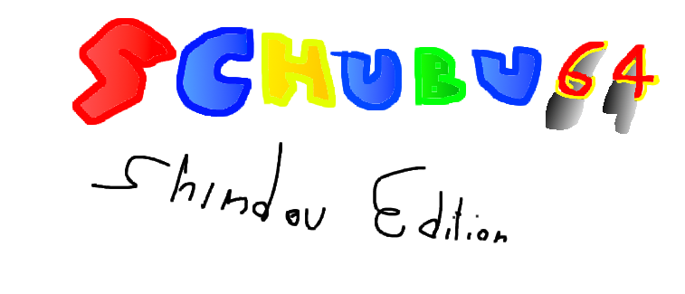

Schubu
Das interaktive Schulbuch
Schubu Shindou Edition ist programmiert von
Mareo Levis
email bstoeckl@brg-pichelmayergasse.at
Originales Schubu
Schubu Shindou Edition ist eine halb witz, halb programmier-flex Website.
